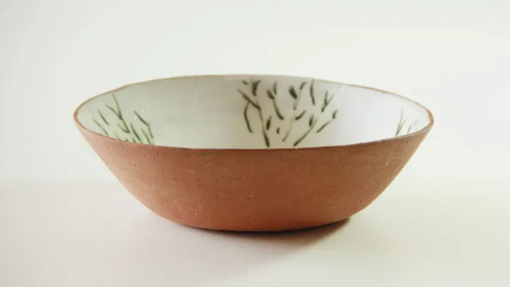
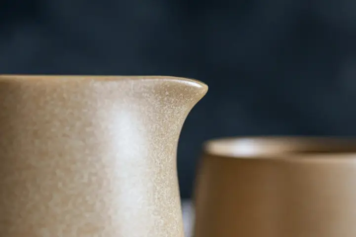

Céramique · grès émaillé
Des pièces tournées à la main.
Bols, tasses et vases façonnés à l’atelier, en petites séries.
Réserver un atelier
Les créations




Prochains ateliers
| Date | Atelier | Durée | Places |
|---|---|---|---|
| Sam. 14 | Initiation tournage | 3 h | 4 |
| Sam. 21 | Émaillage | 2 h | 6 |
| Sam. 28 | Bols à thé | 3 h | 2 |